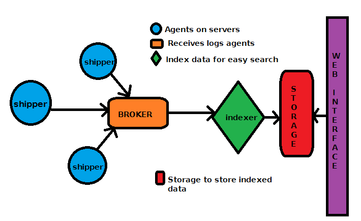

By Brian Scaturro / @scaturr
So you have a shiny new server architecture? You have a bunch of new apps and services? All humming together in perfect harmony?
Nothing can possibly go wrong.
JK. Something will go wrong. You will want to capture that somehow.
So log all the things!
There are a few key pieces of technology at play. The shipper, broker, and indexer. Of course, we will also want some sort of user interface into this madness.
Gathers, parses and sends logs off for indexing.
Lucene powered document store.
Ships logs off to the Logstash.
Interface to search logs.
Configuration management for making all the above as painless as possible to deploy.
The heroes of our story.
Logstash without Elasticsearch is like me without pizza. It's unnatural.
Logstash can be configured to accept all kinds of inputs, and even filter that data before passing it along.
Elasticsearch exposes a nice restful interface, so checking health is easy.
$ curl localhost:9200/_cat/health
$ 1413915720 14:22:00 elasticsearch red 1 1 19 19 0 4 37
Sad Logging Server :(
$ curl localhost:9200/_cat/indices
We can use the above to checkout how big our indexes have grown.
yellow logstash-2014.10.16 5 1 92115607 0 28.1gb 28.1gb
♫ I'm a lumberjack and I'm ok! I sleep when idle, then I ship logs all day! I parse your logs, I eat the JVM agent for lunch! ♫
The forwarder or shipper or "gets logs to server"-er is in charge of getting logs to the server. Each service/app you want to send logs from needs this installed.
Configuration can be handled via a simple json file.
Kibana is our view into our logs. It gives us a nice HTML UI for searching and viewing logs.
Kibana supports several dashboards out of the box, but there is one built for logstash stored at app/dashboards/
Just rename it to default.json
Just a shout out to ansible. It is a handy tool in your dev-ops toolbelt.
Check it out here
We released a configuration for spinning up your own centralized logging system on CentOS 6.5+ here.